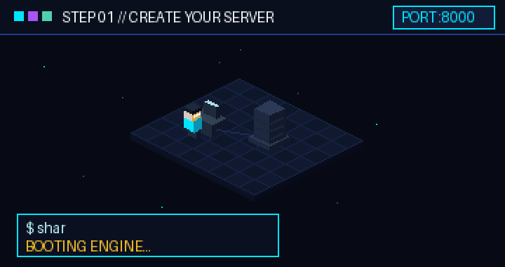
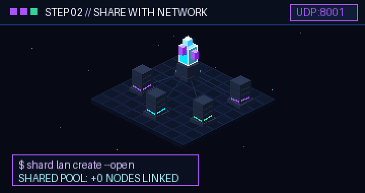
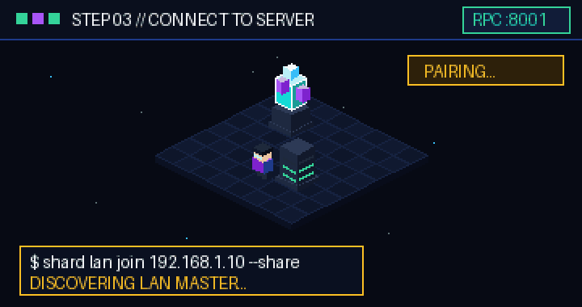
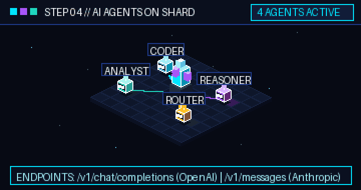
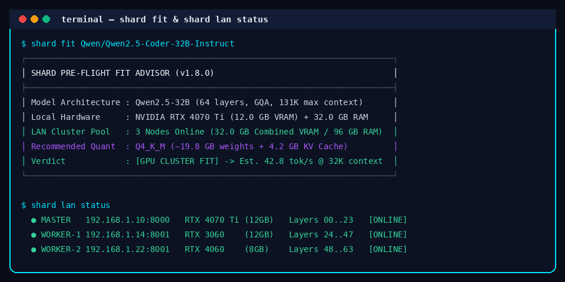

One Engine. Local Pooling. Global Connectivity.
Run massive open LLMs locally by pooling GPU VRAM across your LAN or connecting securely over the decentralized SHARD Network. Pure open source, zero telemetry without consent, and drop-in OpenAI/Anthropic API parity.

What Is SHARD?
SHARD transforms fragmented personal hardware into a unified AI inference engine. No expensive enterprise GPUs or datacenter NVLink interconnects required.
The Problem
Frontier open models (14B, 32B, 70B) exceed the 6-12 GB VRAM capacity of consumer GPUs. Developers are forced into expensive per-token cloud bills or painfully slow single-CPU offloading.
The Solution
SHARD provides a two-tiered system: pooling video memory and RAM across nearby computers on your LAN, and establishing secure peer-to-peer or encrypted relay tunnels across the global Internet.
The Advantage
Rather than all-reduce tensor splitting that demands 100 Gbps cables, SHARD uses layer sharding via llama.cpp RPC. Activations hop sequentially at ~8 KB per token, running fluidly over Wi-Fi, Ethernet, or broadband.
INTERACTIVE HARDWARE FIT SIMULATOR
PRE-FLIGHT MATHTwo Independent Connectivity Systems
SHARD implements two distinct networking architectures designed for different scopes: local memory pooling on your subnet, and decentralized cross-Internet connectivity.
LAN Compute Pool
Zero-configuration memory pooling for computers connected to the same physical Wi-Fi, Ethernet switch, or overlay VPN (Tailscale, WireGuard).
- Automatic UDP discovery beacons broadcast on port 8001 every 2 seconds.
- Web Dashboard radar detects nearby hosts with instant 1-click Join/Share (no manual IP typing).
- Proportional tensor split (-ts) assigns model layers based on exact device VRAM/RAM capacity.
- Pairing codes for private subnets or --open flag for frictionless local hackathons.
shard lan join <SERVER_IP> --share
SHARD Network
Cryptographic, identity-driven networking for connecting remote hosts, clients, and workers across firewalls, NATs, and the public Internet.
- Local Ed25519 cryptographic keypair (node_<hex>) with canonical JSON envelope signing.
- REST Discovery directory with 30s heartbeats to publish and find active AI servers.
- Direct STUN P2P hole punching with automatic fallback to end-to-end encrypted Blind Relay.
- Cryptographic invite tokens with roles (client/worker), bandwidth quotas, and rate limiting.
shard network connect <TARGET> --invite-code <CODE>
How SHARD Works
From standalone PC to multi-node cluster and global connectivity in four transparent steps. Zero proprietary lock-in.

INITIALIZE
Launch your SHARD server. The engine initializes hardware telemetry, evaluates local GPU/RAM budgets, and serves the Web Dashboard and OpenAI/Anthropic REST gateway.
shard start

POOL OR CONNECT
On LAN: nearby machines join with shard lan join <SERVER_IP> --share (or 1-click from the dashboard) to pool memory. Over Internet: remote clients connect using shard network connect <TARGET>.
shard lan join <SERVER_IP> --share

NEGOTIATE & ROUTE
SHARD selects the optimal connection path: direct LAN RPC for local memory slices, direct STUN P2P for remote nodes, or end-to-end encrypted Blind Relay forwarding.
shard network status

CONSUME
Point Cursor, Claude Code, Aider, or your custom agents to http://localhost:8000/v1. Stream tokens with sub-millisecond local response and zero cloud subscriptions.
http://localhost:8000/v1
Engine Features
Engineered from the ground up for low-latency inference, memory pooling, and developer ergonomics.
Zero-Config LAN Discovery
UDP beacons announce cluster availability on port 8001. Nearby nodes appear in the dashboard automatically with instant one-click pairing.
llama.cpp RPC Layer Sharding
Proportional tensor split (-ts) assigns memory slices based on device capacity. Layer hops transfer only ~8 KB activation buffers.
Decentralized SHARD Network
Ed25519 cryptographic identity, public server publishing, STUN NAT traversal, and end-to-end encrypted ChaCha20/AES-GCM blind relay fallback.
PyTorch & GGUF Dual Engines
Run pure PyTorch models for research and development or high-efficiency quantized GGUF models for peak tokens-per-second throughput.
C++20 & MASM AVX2 SIMD
Handcrafted 64-bit assembler kernels deliver sub-microsecond vector operations and zero-copy ring buffers on Windows x64 and Linux.
Pre-Flight Hardware Fit Advisor
Run shard fit before downloading gigabytes. The analyzer mathematically determines if a model fits single-node or requires LAN pooling.
SOUP Fine-Tuning Integration
Consent-gated telemetry collection, automatic PII redaction, dataset generation, and background LoRA/QLoRA training adapter.
OpenAI & Anthropic /v1 Parity
Complete drop-in compatibility for /v1/chat/completions and /v1/messages with streaming Server-Sent Events (SSE) and tool calling.


System Architecture
Transparent modular architecture. Click any subsystem on the left to inspect its role, communication protocols, and source location.
Master llama-server & Tensor Splitter
Executes llama-server with --rpc targets and -ts weights. Hosts model weights, coordinates inference layers, and handles master GPU/RAM device budget allocation.
Complete CLI Reference
Explore every command supported by the shard CLI parser. All commands verified against the current repository implementation.
shard start [--host IP] [--port N] [--daemon] [--no-browser]
Start the local SHARD inference server, initialize hardware diagnostics, and serve the Web Dashboard.
shard stop
Safely terminate any running background SHARD server daemon and clean up socket locks.
shard restart [--foreground]
Restart the running SHARD instance. Pass --foreground to attach output directly to terminal.
shard status
Print detailed runtime diagnostic report: PID, uptime, active model ID, memory consumption, and port bindings.
shard doctor
Verify local environment prerequisites: Python version, PyTorch, CUDA GPU driver, llama-server runtime, and AVX2 SIMD support.
shard list [--category [all|ideal|coding|reasoning|compact]]
List cached downloaded models and browse curated Hugging Face models with local hardware fit ratings.
shard fit <model_id> [--ctx <tokens>] [--no-fetch]
Pre-flight hardware fit advisor. Mathematically computes memory requirements and recommends GGUF quantization.
shard run [model_id]
Load a specified model into memory and launch an interactive terminal chat REPL with streaming tokens.
shard models-dir [path] [--reset]
View, configure custom disk directory, or reset storage location for downloaded model weights.
shard key [--gen]
Display existing local API keys for IDE integration, or generate new cryptographically secure keys.
shard lan status
Display current LAN cluster state: host IP, network mode (open/private), active member list, and pooled VRAM capacity.
shard lan create [name] [--open] [--model ID]
Create a local cluster host. Broadcasts UDP beacons on port 8001. Pass --open to allow peers to join without a pairing code.
shard lan join <SERVER_IP> [code] [--share] [--port N]
Connect to an active LAN server. Pass --share to contribute spare GPU VRAM or system RAM to the cluster pool.
shard lan diagnose [--public]
Inspect local network adapters, Tailscale/VPN interfaces, UPnP IGD gateway, and STUN NAT type to determine best join IP.
shard lan off
Gracefully disconnect from a connected cluster or stop hosting the local LAN network.
shard network status
Show node identity, public key fingerprint, hosting state, active transport (Direct P2P or Relay), and connected peers.
shard network identity [--regen]
Display local Ed25519 node public key, node ID (node_<hex>), and cryptographic envelope signature.
shard network servers [--query Q]
Query the configured Discovery directory to browse available public AI servers, models, and capacity.
shard network publish [--name NAME] [--open] [--bandwidth-limit-mbps N]
Register and publish your local inference server to Discovery and Blind Relay with optional rate limiting.
shard network connect <target> [--invite-code CODE] [--force-relay]
Connect to a remote SHARD server using direct STUN hole punching or fallback to end-to-end encrypted Blind Relay.
shard network invite [--role client|worker] [--quota-mb N] [--ttl-hours N]
Generate signed cryptographic invite tokens with role permissions, bandwidth quotas, and expiration lifetimes.
shard network discovery-serve [--port 8090]
Run a standalone, self-hosted Discovery server to maintain server directories for your team or organization.
shard network relay-serve [--port 8091]
Run a self-hosted Blind Encrypted Relay server for high-throughput WebSocket traffic forwarding between NAT-blocked peers.
shard training status
Display SOUP adapter status, feedback queue counts (approved/pending), dataset snapshots, and background jobs.
shard training doctor
Inspect SOUP integration prerequisites: Python version, CUDA readiness, trl, peft, and datasets dependencies.
shard training feedback --prompt "..." --response "..." [--approved]
Record consent-gated alignment feedback with automated client-side PII scrubbing.
shard training dataset --format [chatml|alpaca|sharegpt]
Compile approved interaction feedback into an immutable training dataset snapshot ready for fine-tuning.
shard training run --dataset <id> [--task sft|dpo] [--base <model>]
Execute background LoRA fine-tuning run on the selected dataset snapshot.
Installation & Quick Start
Choose your preferred environment. SHARD runs anywhere from standalone developer laptops to dedicated LAN clusters and headless servers.
git clone https://github.com/avelone123123/shard.git cd shard
python -m pip install -e . python -m pip install ".[full]"
shard start
shard doctor
docker compose up -d
docker compose -f deploy/docker/docker-compose.network.yml up -d
python native/build_native.py shard test
Real-World Use Cases
How developers and teams deploy SHARD to solve real memory bottlenecks without subscription costs.
The Laptop + Desktop Supernode
Combine an RTX 3060 gaming laptop (6 GB VRAM) with an office desktop (16 GB RAM). Together, they pool 22 GB to run 32B coding models collaboratively.
Private AI Coding Agent Backend
Point Cursor, Claude Code, and Aider to http://localhost:8000/v1. Enjoy unmetered local completions and refactoring sessions without cloud rate limits.
Air-Gapped & Multi-Office Clusters
Run completely offline on isolated local subnets, or connect distributed branch offices across the Internet using end-to-end encrypted blind relays.
Frequently Asked Questions
Technical specifics, requirements, and hardware compatibility.
You can start with a single PC running Windows or Linux with a modern CPU supporting AVX2. Adding an NVIDIA CUDA GPU accelerates inference, and connecting additional LAN computers pools their memory automatically.
SHARD leverages llama.cpp native RPC protocol. The master node analyzes available memory budgets across all connected machines and splits model layers proportionally using the -ts flag.
No. Because SHARD uses layer sharding rather than all-reduce tensor splitting, only the hidden state activations (~8 KB per token hop) are transmitted between nodes. Standard Gigabit Ethernet or Wi-Fi is fully sufficient.
Yes. SHARD provides 100% compatible /v1/chat/completions (OpenAI) and /v1/messages (Anthropic) endpoints with streaming SSE support. Simply point your tool base URL to http://localhost:8000/v1.
An open network broadcasts an open flag in its UDP beacon. Other machines on your local subnet can discover and join the cluster with a single click in the Web Dashboard without typing a pairing code.
Yes. SHARD is 100% open source under the permissive MIT License. You are free to inspect, modify, fork, and deploy it for personal and commercial applications.
LAN Compute Pool is for local subnet memory pooling using UDP 8001 beacons and llama.cpp RPC. SHARD Network is a global decentralized protocol with Ed25519 node identities, STUN NAT traversal, and ChaCha20/AES-GCM blind encrypted relays for cross-Internet connectivity.
In LAN mode, the Web Dashboard continuously listens to UDP 8001 discovery beacons and shows nearby active clusters with one-click Join/Share buttons. The CLI command shard lan diagnose also auto-detects and displays the host recommended join IP.
Your server. Your network. Your SHARD.
Experience genuine local AI autonomy. Pool your hardware and run frontier models today.